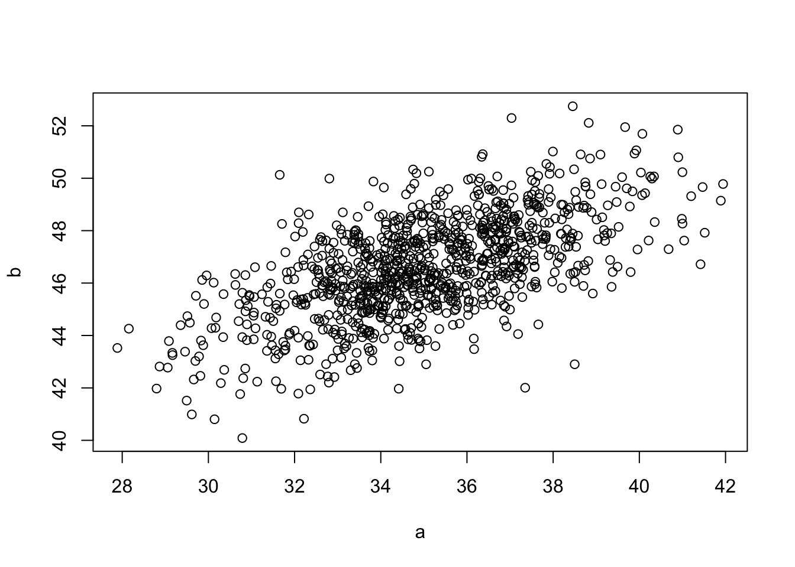
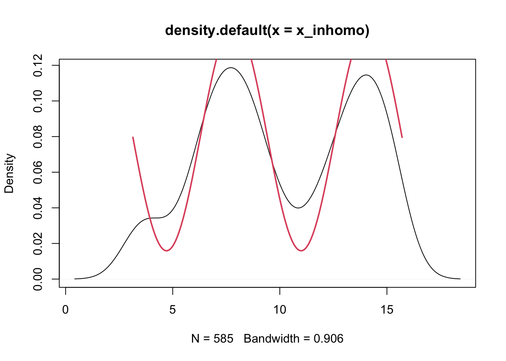

lambda <- function(theta, time){
theta[1] * sin(time) + theta[2]
}
Lambda <- function(theta, time){
- theta[1] * cos(time) + theta[2] * time
}Workshop 3: Inference
Overview
In the previous workshop we considered how to generate realisations from a given point process when we know its intensity function.
In this workshop we will consider the reverse problem: given one (or more) point patterns generated from a Poisson process, how can we estimate the unknown intensity that generated those points?
Simulate
t_min <- pi
t_max <- 5*pi
theta_true = c(40, 50)
lambda_max <- 90
t <- seq(t_min, t_max, length.out = 1001)
lambda_vals <- lambda(theta = theta_true, time = t)
plot(t, lambda_vals, type = "l", lwd = 2, ylim = c(0,100))n_homo <- rpois(n = 1, lambda = lambda_max * (t_max - t_min))
x_homo <- runif(n = n_homo, min = t_min, max = t_max)
Lambda_A <- Lambda(theta_true, t_max) - Lambda(theta_true, t_min)
prob_keep <- lambda(theta = theta_true, time = x_homo) / lambda_max
is_kept <- rbinom(n = n_homo, size = 1, prob = prob_keep)
x_inhomo <- x_homo[is_kept == 1]
n_inhomo <- length(x_inhomo)
plot(t, lambda_vals, type = "l", lwd = 2, ylim = c(0,100))
points(x = x_inhomo, y = rep(0, n_inhomo), pch = 16, col = rgb(0,0,0,0.2))
# Negative log-liklihood
nllh_ihpp <- function(theta, x, A){
if(theta[1] > theta[2]) return(1e8)
# Integral term
Lambda_term <- Lambda(theta, A[2]) - Lambda(theta, A[1])
# Intensity term
lambda_term <- - sum(log(lambda(theta, time = x)))
#
return(lambda_term + Lambda_term)
}
# Evaluate for lambda = 0 * sin(t) + 5
nllh_ihpp( theta = c(0, 5), x = x_inhomo, A = c(pi, 5*pi))[1] -878.6893opt <- optim(
par = c(0,5), # starting parameter values
fn = nllh_ihpp,
method = "L-BFGS-B",
hessian = TRUE,
A = c(t_min, t_max),
x = x_inhomo
)
opt$par
[1] 35.02663 46.55281
$value
[1] -1750.902
$counts
function gradient
14 14
$convergence
[1] 0
$message
[1] "CONVERGENCE: REL_REDUCTION_OF_F <= FACTR*EPSMCH"
$hessian
[,1] [,2]
[1,] 0.2493894 -0.1876421
[2,] -0.1876421 0.4111211fitted_intensity <- lambda(theta = opt$par, time = t)
plot(t, lambda_vals, type = "l", lwd = 2, ylim = c(0,100))
points(x = x_inhomo, y = rep(0, n_inhomo), pch = 16)
lines(t, fitted_intensity, col = 2, type = "l", lwd = 2, ylim = c(0,10))\[\hat \theta \sim MVN(\theta, I^{-1}(\theta)) \]
\[\hat \theta - \theta \sim MVN(0, I^{-1}(\theta)) \]
\[\hat \theta - \theta \sim MVN(0, I_O^{-1}(\hat\theta)) \]
\[\hat \theta - \theta \sim MVN(0, - H^{-1}(\theta)) \]
mle_samples <- mgcv::rmvn(n = 1000, mu = opt$par, V = solve(opt$hessian))
plot(mle_samples, xlab = "a", ylab = "b")
plot(t, lambda_vals, type = "l", lwd = 2, ylim = c(0,100))
for (i in 1:1000){
lines(t, lambda(mle_samples[i,], t), type = "l", lwd = 2, ylim = c(0,10), col = rgb(1,0,0,0.01))
}
lines(t, lambda_vals, lwd = 2) 
plot(density(x_inhomo))
lines(t, lambda_vals/(Lambda_A), col = 2, type = "l", lwd = 2)